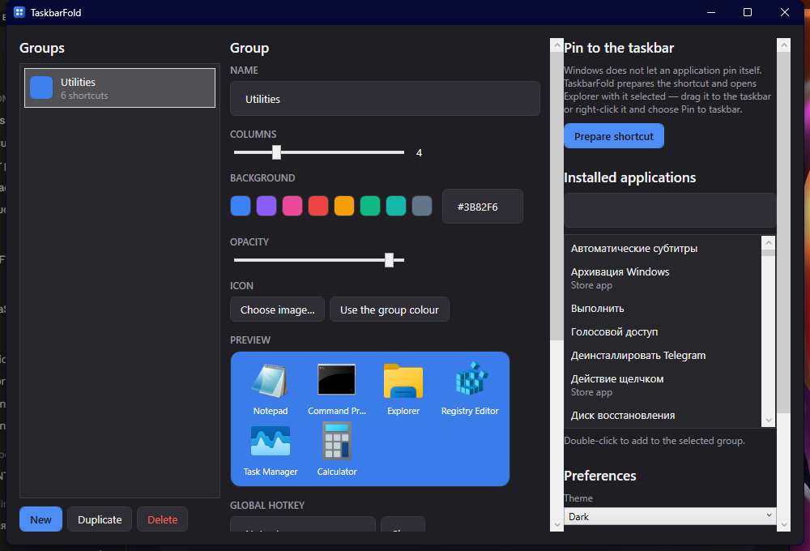

Opens instantly
A tray process keeps every group window built and warm. Clicking a group shows it. It does not start a new process.

Windows cannot group pinned shortcuts. There are no folders and no nesting. Past a dozen icons the row turns into a pile you scan instead of read.


A tray process keeps every group window built and warm. Clicking a group shows it. It does not start a new process.
Type to filter the group, press a digit to launch by position.
Per-monitor v2 DPI. The panel snaps to the taskbar of the screen holding the cursor, auto-hide included.
Packaged applications are listed with their AppUserModelIDs and launched through the shell.
Follows the Windows setting by default, with an acrylic backdrop where Windows 11 provides one.
A moved application is searched for by file name and rebound, instead of leaving a dead icon behind.

Give it a name, a colour and a column count. The group keeps a permanent id, so renaming it later never breaks the pin.
Drag them in from Explorer, pick a file, or double-click an entry in the list of installed applications.
One button writes the shortcut and opens Explorer with it selected. Drag it onto the taskbar and the group is live.
Price
The source is published under the MIT licence: read it, build it, change it, ship your own copy.
The open-source project that solved this first was abandoned in January 2021, on a framework older than Windows 11. TaskbarFold is a fresh implementation of the same idea.
A cold process start on every click
A tray resident with the window already built
Sizes in raw pixels, no DPI awareness
Per-monitor v2, every size in DIP
The monitor index was computed incorrectly
The taskbar edge is derived per monitor
Config next to the .exe, needs elevation
Config in %APPDATA%, never elevated
Renaming a group broke its pin
A group is identified by a permanent id
No search inside a group
Type to filter, digits to launch
Windows 10 and 11 deliberately removed the API for pinning to the taskbar, and the registry workarounds break with feature updates. TaskbarFold prepares the shortcut correctly and hands it to you selected in Explorer. The last drag is yours.
No. The installer is per-user, the configuration lives in %APPDATA%, and the application never asks for elevation.
Yes, from build 1809. The acrylic backdrop is a Windows 11 feature; on Windows 10 the panel uses a solid colour with opacity instead.
No. The portable build is a single self-contained executable with no runtime prerequisite.
No. The only network request is an update check against GitHub releases, made at most once a day and never on the UI path.
A per-user installer or a portable zip. Both are free.
Download0.1.0 Windows 10 (1809+) and Windows 11 x64 MIT licence